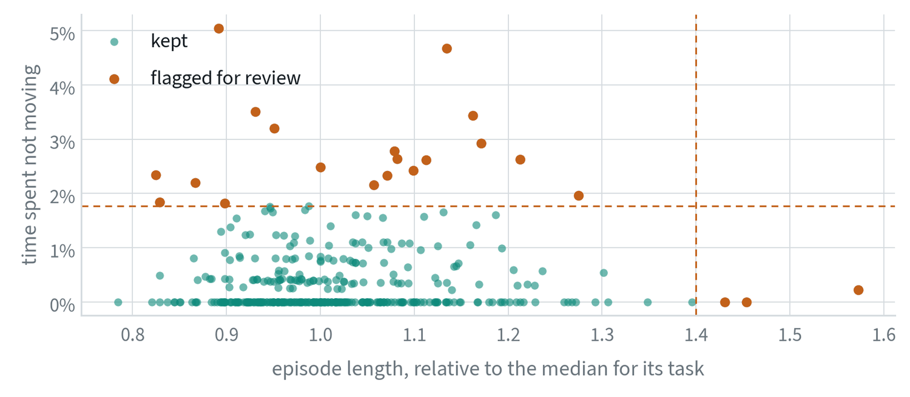
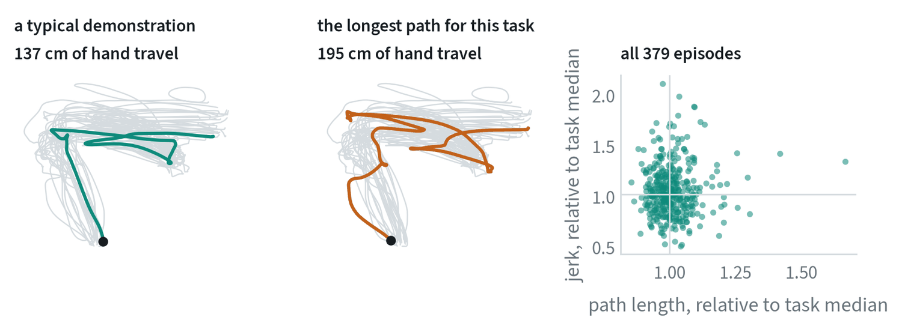
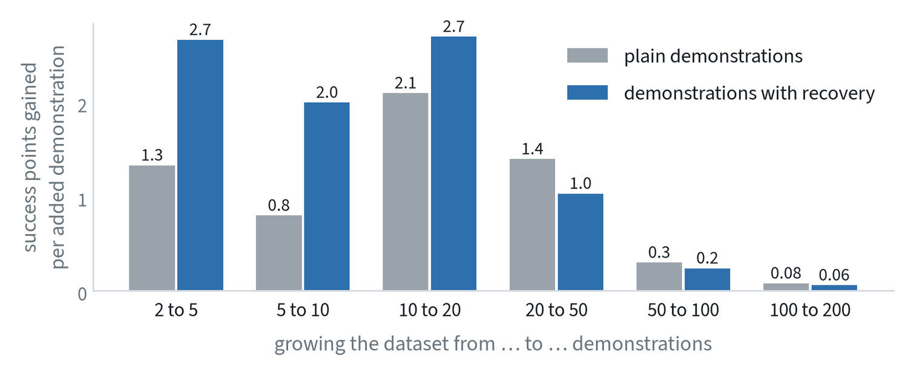

Quality is a property of the dataset, not of the model
The same model trained on two datasets of the same size can differ more than two different models trained on one dataset. Data quality is therefore the cheapest lever in robot learning and the least glamorous. This note covers it in three parts: what a good demonstration is, how a dataset too large to watch is checked, and how to tell what a given batch of data was worth.
The note on data for robots covers where the data comes from, and the data flywheel covers data that arrives after deployment.
What makes a good demonstration
More data only helps if it is good data. Slow, hesitant or failed demonstrations teach the policy to be slow, hesitant and to fail. A good demonstration has seven properties, and most of them are decided by the instructions given to the operator before collection starts.
| Property | What it means | Why it matters |
|---|---|---|
| Consistent | One strategy per task, written into the operator instructions | Two strategies for the same situation give the policy two answers to average |
| Observable | The operator acts only on what the robot’s cameras show | If the operator looks over the robot’s shoulder, the data contains decisions the policy cannot reproduce |
| Decisive | Steady speed, with no idle pauses or fidgeting | A policy copies hesitation, and pauses teach it that doing nothing is a valid action |
| Feasible | Inside the robot’s joint, speed and gripper limits | Motions at the limits are clipped by the controller and recorded wrongly |
| Includes recovery | A small share of episodes show a slip or a bad grasp being corrected | Otherwise the policy has never seen how to get back |
| Diverse where it matters | Objects, layouts and starting poses vary. The strategy does not. | Variety in the scene generalises. Variety in the method confuses. |
| Cleanly recorded | Sensors in sync, steady frame timing, correct task labels and sub-task boundaries | Every one of these, when wrong, is a silent bug |
“Consistent” and “diverse” pull in different directions only on the surface. Vary what the world can vary. Hold fixed what the operator chooses.
Curation at scale
Past a few hundred episodes nobody can watch everything, so quality has to be checked by program, with people looking at what the programs flag.


| Stage | What it does |
|---|---|
| Sanity checks | Timestamp gaps, dropped frames, sensors out of sync, calibration drift. Reject or repair automatically. |
| Episode scoring | Success label, duration against similar episodes, jerkiness, pauses, repeated grasps. The figure above uses two of these. |
| Consistency checks | Group the demonstrations of one task and flag outlier strategies and outlier operators. |
| De-duplication | Embed every episode and drop near-copies, which add volume and no information. |
| Coverage mapping | Find what is missing among objects, scenes and layouts, and use it to plan the next collection. |
| Labelling | A vision-language model writes a first pass of instructions and sub-task boundaries. People check a sample. |
| Closing the loop | Failures found in evaluation become the brief for the next round of collection. |
The last row is what turns curation from cleaning into a strategy. The dataset is steered by what the policy gets wrong.
Scores computed on every episode
The scores used for curation are simple functions of the recorded motion. Let be the hand position at step and the time between steps.
Path length measures directness. Jerk, the third derivative of position, measures smoothness: a hesitant or corrected motion has large jerk even when its path is short. Idle time is the share of steps with a near-zero command, and duration is the episode length. Each score is divided by the median for its task, because tasks differ.


The middle panel is the kind of episode these scores exist to find. Its path is 42% longer than the median for the task and it wanders outside the envelope of the others. It may be a demonstration of recovery, which is valuable, or an operator hesitating, which is not, and only a person looking at it can say which. The scores decide what gets looked at.
The right-hand panel shows why one score is not enough. Path length and jerk are almost uncorrelated across these episodes, with a correlation of 0.05, so each flags different demonstrations. Path length and duration, by contrast, correlate at 0.63 and are partly redundant.
Measuring consistency
Consistency between demonstrations of the same task can be measured directly. Resample every demonstration to a common number of steps, and at each step compute the spread across demonstrations:
Low spread where the task needs precision, at a grasp or an insertion, is the sign of a clean dataset. The note on failure triage plots exactly this for one task. Two refinements are common. Aligning demonstrations in time before comparing them, by warping the time axis so that matching events line up, removes differences that are only in speed. And comparing operators against each other shows whether the spread comes from the task or from one person’s habits.
A learned alternative asks how predictable each demonstration’s actions are from its observations, given the rest of the dataset. Demonstrations whose actions are poorly predicted are the inconsistent ones. This is the idea behind estimating data quality from mutual information between states and actions.
Measuring what data is worth
Hours collected is the easy number to report and the wrong one to manage by. The question is how much each kind of data improves the policy.


- Ablate it. Train with and without a batch or a source and compare on the evaluation suite. This is the only direct measurement.
- Compare properly. Use the same starting conditions for both checkpoints, interleave the trials in time, and report intervals, as the evaluation note describes. A data ablation judged on 20 trials measures noise.
- Use cheap stand-ins first. Fine-tune a small model on subsets before committing to a full training run.
- Estimate influence. Newer methods estimate which individual demonstrations helped or hurt specific outcomes without retraining for each one. They are approximate and good for finding harmful episodes.
- Track a curve per source. Plot the gain as each source grows, as in the figure, and notice where it flattens.
- Count in money. The useful unit is evaluation points gained per dollar, which lets a cheap, weak source be compared with an expensive, strong one.
- Move the budget. Spend on the source whose curve is still climbing.
Common mistakes
- Managing by hours collected. Track what each source adds to evaluation results per dollar.
- Reviewing by sampling alone. A random sample finds common problems. Rare ones need a score computed on every episode.
- Filtering without measuring. Check that removing the flagged episodes improves the policy. Sometimes the unusual ones were the recovery data.
Terms
- Curation
- Checking, scoring, filtering and labelling a dataset before training on it.
- Ablation
- Removing one thing and measuring the difference, to learn what it contributed.
- Jerk
- The rate of change of acceleration; a measure of how smooth a motion is.
- Influence
- An estimate of how much one training example changed a model’s behaviour on a given test case.